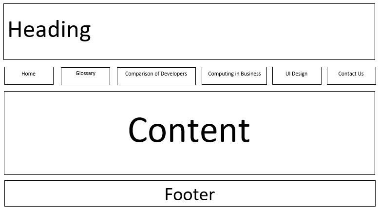

Conclusion
In the first term of learning Web Development we learned that there are lot of different ways in which the development can take place and there are lot of different resources for doing the development. The first thing we used was HTML code which is the simplest way of doing wed design but nonetheless very informative and interactive. Then we started using CSS and JavaScript which is much more complex but much better than using only HTML.
When we started doing the assignment we took in design elements from material design and we also used all the information and knowledge gained from the classes of web development.
When we were given the assignment, we came with our own ideas and vision, some of them could be easily implemented while some are difficult to implement
You can add more complex codes to the webpage which will yield very good results, but the implementation could be difficult, while if you add simple code the result will be very basic while the implantation becomes easier.
While I started implementing the material design to my webpage I came up with a wire frame for the website which can be seen below.
Web development is almost like software development while at the same time having its own different. Web development is much freer, and it works with all the platform and there is almost universal compatibility for it.